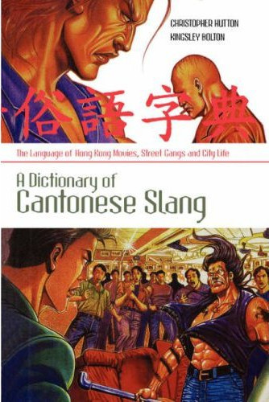

♪ Ripples of Yuet music
ETERNAL TREASURE
Listen the elegant pronunciation of Cantonese, the pure nature sounds of the language, realise the charm of the true pronunciation of pure Cantonese words from the several songs of Hong Kong Cantopop musicians:
Mr. 許冠傑/Samuel Hui Koon-Kit,
Mr. 陳百強/Danny Chan Pak-keung.
listen the music online with your mobile phone.
Books
 | Elementary Cantonese - Sidney Lau, 初級粵語課本-劉錫祥 |
 | Intermediate Cantonese - Sidney Lau, 中級粵語課本-劉錫祥 |
 | Advanced Cantonese - Sidney Lau, 高級粵語課本-劉錫祥 |
 | Chinese-English Dictionary, Cantonese in Yale Romanization - 英漢小字典 |
 | English-Cantonese Dictionary, Cantonese in Yale Romanization - 英粵字典 |
|  | A Dictionary of Cantonese Slang - 俗語字典 |
{kind=link}
Audio
Audio from Mr. Sidney Lau's series of Cantonese books.
Links
1, The Yuet - Chinese text to speech synthesis engine.
2, Translation between Cantonese and Mandarin, some examples.
3, Fun with Cantonese idioms and proverbs.
4, * You should listen the operas and the songs and study the lyrics from Mr. 尹光/Wan Kwong if you want to learn the true Cantonese words and pure pronunciation of Cantonese.
More fun with music and lyrics from Mr. 尹光/Wan Kwong online.
Should you for some reason need any of the materials, book or audio, don’t hesitate to drop us an email.